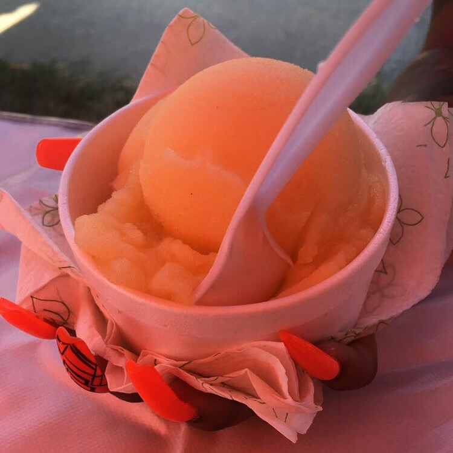

Since 2009, Carib Pops has been one of the latest faces to culinary Atlanta.
Carib Pops is a family ran and operated business owned by sisters, Empress and Queenie. From our family to yours, Carib Pops specializes in creating homemade summer treats such as popsicles, ice creams and Italian ices, doing so with only the freshest, natural, organic ingredients. Our frozen snacks are always free of any artificial sugars, flavorings, and byproducts. Carib Pops is known around the metro Atlanta area for its famously infamous green thumb in delivering exotic Caribbean fruit flavors. With over 30 choices, and new choices added monthly, we have one of the widest ranges in flavors to choose from that’s fit for the whole family!
